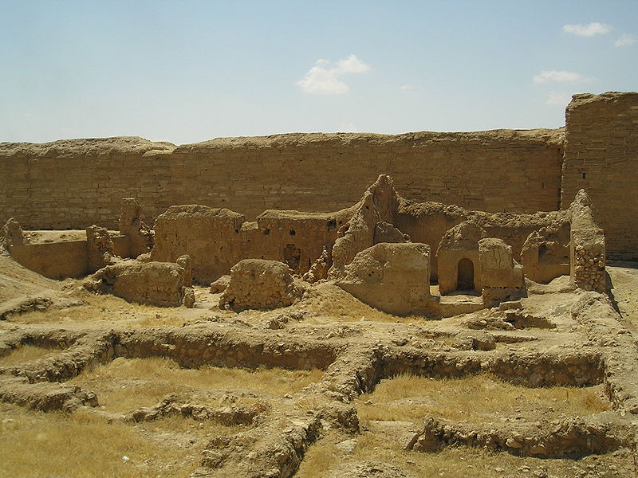
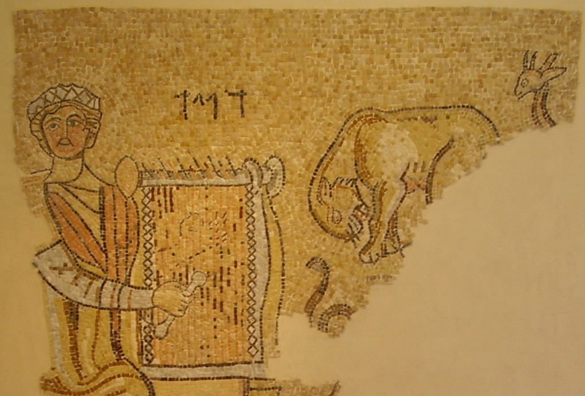

Фреска как мидраш
На стенах синагоги в три яруса расположены фрески на библейские сюжеты.
источник: ja-tora.com

В 1932-1935 гг. во время раскопок эллинистического города Дура-Европос на Евфрате, в современной Сирии, М.И.Ростовцев раскопал хорошо сохранившуюся синагогу. Здание синагоги было построено в 244-245 годы, о чём свидетельствует найденная при раскопках надпись на арамейском языке. Высота здания около 7 метров, размеры главного зала 7,68 м X 13,35 м, вдоль стен зала располагались скамьи. В западной стене, обращённой к Иерусалиму, была обнаружена традиционная полукруглая ниша для хранения свитков Торы, перед нишей находилось возвышение.
Синагога располагалась рядом с городской стеной, и в 256 году при строительстве укреплений против войск Сасанидов с неё была снята крыша, а здание засыпали песком. Это и позволило сохраниться её знаменитым фрескам, т.к. после захвата Сасанидами город был заброшен.
На стенах синагоги в три яруса расположены фрески на библейские сюжеты. Их множество: четыре сцены из жизни Моше, сцены из жизни Яакова, Аѓарона, Шмуэля, Давида, Шломо, пророков Элияѓу и Йехезкеля, Эстер, а также исход евреев из Египта, переход через море Суф, ковчег завета. Эти фрески чрезвычайно интересны историкам искусства, замечательны они и тем, что в них спокойно нарушается известный еврейский запрет на изображение человека: видимо, в городе Дура-Европос его трактовали по-другому. Но нам интересен ещё один аспект этих фресок – их точное содержание. Не только текст Танаха лежит в их основе! На некоторых фресках узнаются сюжеты из мидрашей – а ведь до V в. никакие мидраши не записывались, и значит, перед нами самая ранняя их фиксация.
Израильский исследователь Яэль Мали выделяет следующие типы мидрашного содержания фресок:
– иллюстрации к мидрашу;
– использование языческих символов в еврейских целях;
– композиционные аллюзии.
Обратимся к примерам.
1. Иллюстрацию к известному мидрашу можно увидеть на фресках, изображающих состязание пророка Элияѓу со служителями культа Баала на горе Кармель (Млахим-I, гл. 18).

Здесь служители Баала скачут и пляшут, пытаются вызвать огонь, но это удаётся только пророку Элияѓу. Обратите внимание на греческие одежды всех персонажей: до историзма в искусстве ещё далеко. Образ Элияѓу был важен для прихожан синагоги, так как символизировал и борьбу против идолопоклонства, и надежду на грядущее избавление. А на другой фреске есть интересная деталь:

Внутри жертвенника сидит какой-то маленький человек, а возле него – змей. Что это?
«Хиэль сделал жертвенник полым, его посадили внутрь и сказали ему: Когда услышишь наши крики, высеки огонь и разожги изнутри. Но Святой, благословен Он, послал змея, он ужалил его, и тот умер» (Ялкут Шимони, Млахим-I, 18).
Мидраш Ялкут Шимони – это поздний сборник мидрашей, сохраняющий многие древние традиции, прямые источники которых утрачены.
2. Вот изображение перехода евреев через море:
Вверху, видимо, две руки Бога, что само по себе интересно. А почему они направлены в разные стороны, одна к евреям, другая к египтянам?
«Сказал рабби Абаѓу: Это подобно человеку, который шёл с сыном и вдруг увидел разбойников. Что он сделал? Взял сына в одну руку, а другой рукой сражался с разбойниками. Сказал ему сын: Отец, да не оставят меня вовеки две эти руки – одна, что держит меня, и другая, что убивает разбойников! Так сказали евреи Святому, благословен Он: Да будет мир с двумя Твоими руками: с той, что спасала нас из моря, и с той, что сотрясла египтян» (Шмот раба, 22:2).
3. Евреи вышли из Египта «хамушим» (Шмот, 13:18). Что означает это уникальное слово? «Вооружённые» – говорит Мехильта де-рабби Шимон бар Йохай (Шмот, 13:18). И на нашей фреске мы видим вооружённых евреев, переходящих море – но сражаться им не пришлось, Всевышний сражался за них.
4. Мидраши говорят о чудесном колодце Мирьям, сопровождавшем евреев в их странствиях по пустыне: Когда колена Израиля располагались и скиния останавливалась, скала с чудесным колодцем появлялась во дворе скинии, и главы колен приходили к нему и возглашали: «Вознесись, колодец» (Бемидбар, 21:17) (Бемидбар раба, 1:2). К каждому колену тёк от колодца свой ручей (Тосефта Сукка, 3:3). Вот как это изображено на фреске:
5. Чтобы достать из Нила младенца Моше, дочь фараона «послала» туда нечто, называемое «ама» (Шмот, 2:5). Но это слово имеет два значения:
«Спорили рабби Йеѓуда и рабби Нехемья, один сказал – это была рука, другой сказал – это была служанка» (Сота, 12б).
Фреска поддерживает одну из позиций в споре:
А какую из позиций? Не спешите с ответом, а сначала подумайте: почему та, что достаёт Моше (изображённого дважды), обнажена? Вот почему:
«Сказано: “И спустилась дочь фараона омыться в Ниле” (Шмот, 2:5), и сказал рабби Йоханан: Омыться от идолопоклонства дома отца её» (Мегила, 13а).
По мнению мидрашей, дочь фараона приняла иудаизм, для чего требуется омовение в источнике. Значит, маленького Моше держит не служанка, а дочь фараона, она-то и «послала руку».
6. На фреске, изображающей Ахашвероша, Ѓамана (Амана) и Мордехая, Ѓаман (второй слева) изображён в странной одежде:
Такое не приличествует первому вельможе в царстве. Но дело в том, что согласно мидрашу Ѓаман был когда-то цирюльником и даже рабом Мордехая (Мегила, 16а).
Кроме того, на этой фреске царь Ахашверош сидит на знаменитом троне Шломо из мидрашей, на ступенях которого располагались золотые звери, двигавшиеся, как живые. Впрочем, не совсем на том троне:
«Сказал рабби Коѓен от имени рабби Азарьи: Захотел он сесть на престол Шломо, но звери не позволили, сказав ему: царь, не являющийся космократором (повелителем мира), не может сидеть на нём. Тогда он сделал себе его подобие» (Эстер раба, 1:12).
7. Пример использования языческих символов. Над нишей для ковчега изображён, среди прочего, Давид, играющий на лире. Он одет в одежды персидских царей, но почему-то во фригийском колпаке, рядом с ним звери и птицы. Всё привычно и прилично. Но обратите внимание на его позу:
И сравните её с этим:
Это ведь Орфей, зачаровывающий зверей пением. Фригийский колпак – его атрибут. А вот другой Орфей – из Сицилии этого же периода (2-3 вв.):
Давид и Орфей – оба пастухи, оба играют на лире, оба чрезвычайно важные фигуры для соответствующих культур. Хищники возле играющего Давида – отклик на известное пророчество о временах его потомка-Машиаха (Мессии): «И будет жить волк с ягнёнком». Фреска в синагоге говорит с прихожанами на понятном им изобразительном языке.
И ещё один Давид-Орфей – из синагоги в Газе:

Только здесь он ещё немного и византийский император. Сравните с изображением Юстиниана в церкви Сан-Витале:
8. На фреске ниже изображен Давид в момент помазания, он облачен в императорскую византийскую порфиру:
Эта фреска содержит также композиционную аллюзию. Пророк Шмуэль изображён гораздо выше царя Давида. Почему? Не потому ли, предполагают некоторые исследователи, что главой синагоги в Дура-Европос был Шмуэль ѓа-коѓен, работами руководил Шмуэль бен Сафра, а старейшиной общины – Шмуэль бен Иди?
В фресках Дура-Европос можно рассмотреть отражение и политических споров эпохи, и дискуссию с христианством, но эти темы мы оставим за рамками нашей статьи.